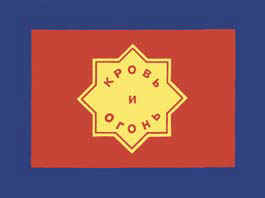
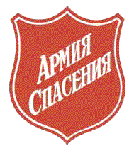
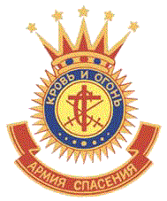

Символика
dragnev.chat.ru/army/simbols.htm
Форма и атрибутика Армии Спасения глубоко символичны. Они предназначены для того, чтобы
проповедовать без участия проповедника. Сами за себя.
|
|  |
Флаг Армии Спасения
(здесь мы видим всю Троицу)
Синий цвет - цвет Неба, чистоты: Символ святости Бога-Отца.
Красный цвет - символ пролитой крови Иисуса Христа.
Желтый цвет - символизирует огонь Духа Святого.
Три цвета, которые используются во флаге, присутствуют почти в любом представлении Армии
Спасения. Это, так называемые, цвета Армии. На самом деле - это вновь свидетельство о трех
основополагающих утверждениях (см. флаг):
Синий - ВЕРА, Бог, Небо. "Без веры угодить Богу невозможно"
(Евр.11:6)
Красный - СПАСЕНИЕ, Христос, Кровь, Голгофа. "Без пролития Крови не бывает
прощения" (Евр.9:22)
Желтый - СВЯТОСТЬ, Дух Святой, Огонь, очищение. В свое время (при основании Армии Спасения)
доктрина о святости в нашем понимании была уникальной. Армия Спасения одна из первых
христианских церквей, которая стала утверждать, что святость доступна каждому человеку (см.
Доктрину 10). В настоящее время никому и не сможет придти в голову нечто другое, но... |
| 
|
Щит Армии Спасения
Эмблема социальной службы Армии Спасения.
":а паче всего возьмите щит веры, которым возможете угасить все раскаленные стрелы лукавого."
(Ефесянам 6:16) |
|  |
Герб Армии Спасения
Корона - "А теперь готовится мне венец правды, который даст мне Господь, праведный Судия, в
день оный; и не только мне, но и всем, возлюбившим явление Его." (2-е Тимофею 4:8)
Скрещенные мечи - битва с силами зла.
Буква "С" - Спасение!
Крест - неотъемлимый символ христианства. "Кто не несет Креста Моего, тот не достоин Меня"
Семь точек - полнота откровения Слова Божьего (7 = 4 : полнота этого мира + 3 : полнота
Бога).
Солнце - "А для вас, благоговеющие пред именем Моим, взойдет Солнце правды и исцеление в лучах
Его." (Малахия 4:2). Это Христос, который показал Свет людям, ходящим во тьме. 33 луча этого
Солнца - это 33 года, которые Иисус жил непосредственно в мире.
Слова "Кровь и Огонь" - вызывает самые неоднозначные толкования, самое популярное из которых у
людей недалеких - "Сеять кругом кровь и огонь". На самом деле - это две основополагающие истины
христианства - Спасение и Святость. Кровь Иисуса Христа омывает нас от первородного греха
(спасение), Огонь Духа Святого дает силу и желание хранить эту чистоту (святость). |
|
Форма
Форма Армии Спасения – это символ спасения и служения. Только те, кто посвятил свою жизнь
Иисусу, стал его последователем и решил служить Богу как член Армии Спасения имеет право, а это
и привилегия и большая ответственность, носит форму.
Буквы «С» на форме, напоминают нам, что каждый солдат и офицер Армии Спасения «Спасен, чтобы
спасать и спасен чтобы служить» Мы носим форму как свидетельство веры.
Наш основатель
Уильям Бут, сказал: « Форма сама будет проповедовать, заставлять людей думать о Боге и
святости.» Форма дает нам возможность говорить другим о своей готовности – они могут
рассчитывать на нашу помощь.
|
|